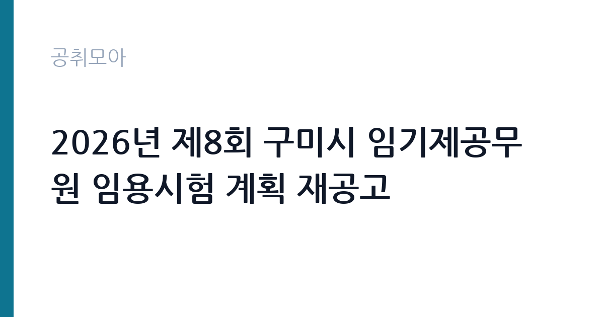

[지자체] 2026년 제8회 구미시 임기제공무원 임용시험 계획 재공고
경상북도 구미시 · 경북 · 마감 2026-11-18 (D-15) · 출처 나라일터

한눈에 보는 모집 조건
| 기관 | 경상북도 구미시 |
|---|---|
| 공고명 | 2026년 제8회 구미시 임기제공무원 임용시험 계획 재공고 |
| 고용형태 | 임기제 |
| 근무지 | 경북 |
| 게시일 | 2026-11-03 |
| 마감일 | 2026-11-18 (D-15) |
지원자격, 이렇게 읽으세요
- 지방시간선택제임기제 마급 1명
- 접수 ~2026-11-18 마감
- 세부 조건은 원문 공고문 확인
임기제공무원은 공무원 신분이지만 임용 기간이 정해져 있습니다. 전문성이 필요한 업무에 채용되며 임용 기간과 연봉등급이 공고문에 명시됩니다. 임기 중에는 공무원으로서의 복무 규정과 이해충돌 방지 의무가 적용됩니다. 이번 공고는 경상북도 구미시가 직접 진행하는 자체 전형입니다. 임기제공무원은 임용 기간이 정해진 신분이며, 응시자격은 직급과 직무에 따라 다릅니다. 시간선택제 마급은 상대적으로 낮은 경력 요건이 적용되는 경우가 많지만, 해당 분야 경력이나 자격을 요구하는 조항이 붙을 수 있습니다. 접수 기간과 방식, 제출서류 목록이 공고문에 제시되어 있으므로 그대로 준비해야 합니다. 임용일부터 근무가 가능한지도 요건에 포함되므로 일정을 먼저 확인하십시오. 응시 자격 판단이 애매하면 접수 전에 채용 담당 부서로 문의하는 편이 안전합니다. 자격 취득 예정자는 채용 공고의 예정자 허용 조항을 먼저 확인해야 합니다. 조항이 없으면 지원 자체가 반려될 수 있습니다. 우대 사항에 해당하면 증빙을 반드시 첨부해야 하며, 누락하면 가점 없이 평가됩니다.
이 공고의 포인트
이 공고의 첫 번째 포인트는 고용 형태입니다. 임용 기간이 정해져 있지만 공무원 신분으로 복무 규정이 적용되고, 전문성이 인정되면 재임용이나 유사 직위 지원에 도움이 됩니다. 두 번째는 업무 범위가 명확하다는 점입니다. 임기제공무원(시간선택제 마급) 직무로 채용되므로 배치 이후 담당 업무가 크게 흔들리지 않습니다. 세 번째는 근무지입니다. 경북 지역 근무로 수도권 공고에 비해 지원자 분포가 넓지 않아 상대적으로 경쟁이 분산되는 경우가 있습니다. 접수 기간이 길지 않아 서류 준비와 자격 확인을 동시에 진행해야 합니다. 같은 직무로 함께 올라온 공고 8건 가운데 마감이 중간에 위치하므로 다른 공고와 일정이 겹치는지 확인하십시오. 다만 선발 인원이 1명으로 많지 않아 자격을 갖춘 지원자가 몰리면 경쟁률이 높아질 수 있습니다.
전형은 어떻게 진행되나
전형은 서류심사와 면접심사를 기본으로 하고 직무에 따라 필기나 실기, 체력검정이 추가됩니다. 서류 단계에서는 응시자격 충족 여부와 제출서류 형식을 확인하며 이 단계에서 탈락하는 지원자가 적지 않습니다. 면접은 직무 이해도와 경험을 확인하는 방식으로 진행되고 발표는 개별 통보나 홈페이지 게시로 이뤄집니다. 최종합격 이후에는 결격사유 조회와 채용 신체검사가 이어지며 이 절차에서 문제가 확인되면 합격이 취소될 수 있습니다. 구체적인 전형 단계와 배점은 공고문에 표로 정리되어 있으니 원문을 기준으로 준비하십시오. 경력 증명서에 직무 내용이 적혀 있지 않으면 인정받지 못할 수 있으므로 상세 기재를 요청하십시오.
이런 분께 추천해요
- 시간선택제 근무 조건을 수용할 수 있는 분
- 지원 직무의 경력·자격 요건을 충족하는 분
- 임용일부터 근무가 가능한 분
지원 전 체크리스트
- 응시자격 요건과 경력 기준을 충족하는가 — 경력은 증명서로 입증해야 합니다
- 임용 기간과 연봉등급, 근무 시간 조건을 확인했는가
- 제출서류 목록을 모두 준비했는가 — 누락 시 서류 단계에서 탈락합니다
- 접수 마감 2026-11-18 이전에 접수 방식을 확인해 제출했는가
모집 일정과 제출 타이밍
2026-11-03에 공고가 올라왔고 접수는 2026-11-18까지입니다. 남은 기간은 15일이며, 이 기간에 자격증 사본과 경력증명서, 주민등록등본 같은 기본 서류를 모두 준비해야 합니다. 경력증명서는 발급에 며칠이 걸리는 경우가 있으니 가장 먼저 신청하십시오. 접수는 온라인과 우편·방문으로 나뉘는 경우가 많고, 우편 접수는 도착 기준으로 판정되므로 마감일 소인만 믿으면 안 됩니다. 면접 일정은 서류 발표 후 개별 통보되므로 제출 후에도 연락을 받을 수 있도록 유지해야 합니다. 제출 서류는 공고문에 적힌 순서대로 정리하면 담당자가 확인하기 쉬워 누락이 줄어듭니다.
직무 이해하기: 지자체
구미시 제8회 임기제공무원 임용시험 재공고는 시간선택제임기제 마급 1명을 뽑는 자리입니다. 시간선택제임기제는 주당 근무 시간을 정해 두고 특정 업무를 담당하는 신분으로, 담당 업무는 임용 예정 부서의 사업에 따라 정해집니다. 부서 사업의 운영 보조와 민원 응대, 자료 작성과 관리를 맡고, 근무 시간이 정해져 있어 업무 우선순위를 스스로 정리해야 합니다. 재공고인 만큼 앞선 차수에서 지원자가 없었거나 요건이 조정된 사정이 있으니 원문의 모집분야 표를 기준으로 판단해야 합니다. 업무 매뉴얼과 지침이 문서로 정리되어 있어 절차를 익히면 반복 업무는 빠르게 손에 붙습니다.
자기소개서 작성 팁
지원서 첫 문단에서 시간선택제임기제 마급 지원임을 분명히 밝히십시오. 같은 시험에서 일반임기제와 시간선택제가 함께 모집되는 경우가 있어 어떤 자리에 지원했는지가 드러나야 합니다. 관련 경력과 자격을 앞세우고, 정해진 근무 시간에 맞춰 달성할 목표를 구체적으로 쓰십시오. 지방자치단체 사업의 예산과 절차를 이해하고 있다는 점을 한 문단 더하면 좋습니다. 문항별 글자 수 제한을 먼저 확인하고, 각 문항의 첫 문장에 결론을 배치하는 방식이 읽기 쉽습니다. 지원 동기는 기관의 어떤 사업에 기여하겠다는 한 문장으로 시작하고, 이어서 본인의 경험을 근거로 붙이십시오. 감점을 피하려면 다른 기관에 보낼 수 있는 범용 문장을 그대로 쓰지 않는 것이 중요합니다. 기관 이름과 사업명이 문장 안에 자연스럽게 들어가야 준비도가 드러납니다.
면접 준비 포인트
면접은 지원 직무를 기준으로 진행됩니다. 시간선택제로 근무한다는 점을 이해하고 있는지, 정해진 근무 시간 안에서 업무를 어떻게 마무리할지 묻습니다. 담당했던 업무와 성과를 구체적으로 답하고, 재공고라는 점을 고려해 지원 동기를 분명히 밝히십시오. 구미시의 주요 사업을 미리 확인해 가면 답변이 구체적으로 나옵니다. 직무 특성상 체력이나 근무 시간에 대한 질문이 나올 수 있으므로 솔직하게 답하고 관리 계획을 함께 제시하십시오. 면접은 공고문에 적힌 직무 내용을 얼마나 이해하고 있는지 확인하는 질문으로 시작하는 경우가 많으니, 모집분야 문구를 그대로 읽어 두는 것이 도움이 됩니다.
급여·근무조건 읽는 법
시간선택제임기제공무원은 지방공무원 보수규정의 연봉등급제를 적용받되, 주당 근무 시간에 비례해 보수가 산정됩니다. 전일제 임기제와 총액을 단순 비교하면 차이가 크게 나므로 근무 시간을 기준으로 환산해 판단해야 합니다. 여기에 직급보조비와 정액급식비 같은 수당이 근무 형태에 따라 붙습니다. 구체적인 금액과 근무 시간은 공고문 처우 항목에서 확인하십시오. 2026년 적용 최저임금은 시급 10,320원, 월 환산 2,156,880원(주 40시간·209시간 기준)입니다. 고용노동부 고시 제2025-47호로 확정된 금액입니다. 공고문에 금액이 제시되지 않은 항목은 원문 보수표나 처우 설명에서 확인해야 하며 확인되지 않은 수치는 쓰지 않는 것이 원칙입니다. 비교할 때는 월 급여뿐 아니라 상여·명절휴가비·복지포인트·초과근무수당까지 포함한 연간 총액으로 계산하십시오. 기간제라면 계약 기간 동안의 총액을, 무기계약이라면 호봉 상승과 정년까지의 누적 소득을 기준으로 판단하는 편이 정확합니다.
자주 묻는 질문
- 선발 인원은 몇 명인가요?
공고문 기준 1명입니다. 직종별로 인원이 나뉘는 경우가 있으니 모집분야 항목을 함께 확인하십시오. - 근무지는 어디인가요?
경북 지역의 경상북도 구미시 소속 근무지입니다. 세부 주소와 출퇴근 조건은 원문 공고문에서 확인할 수 있습니다. - 보수는 얼마인가요?
채용 신분(임기제공무원)과 기관 임금 규정에 따라 정해지며 구체적인 금액은 공고문 처우 항목에 제시됩니다. 금액이 공개되지 않은 경우에는 원문의 보수표를 확인하십시오.
함께 보면 좋은 공고
[지자체] 2026년 제10회 구미시 임기제공무원 임용시험 시행계획 공고 — 마감 2026-11-18[지자체] 2026년 제2회 진안군 공무직근로자(정수시설관리원) 채용계획 재공고 — 마감 2026-11-13[지자체] 전남광주통합특별시의회 교육특별수석전문위원(개방형직위) 채용시험 시행계획 공고 — 마감 2026-11-20출처: 나라일터 공개정보를 바탕으로 공취모아가 정리한 안내글입니다. 모집 조건·일정은 변경될 수 있으니 지원 전 반드시 원문 공고문을 확인하세요. 본 글은 정보 제공용이며 합격을 보장하지 않습니다.